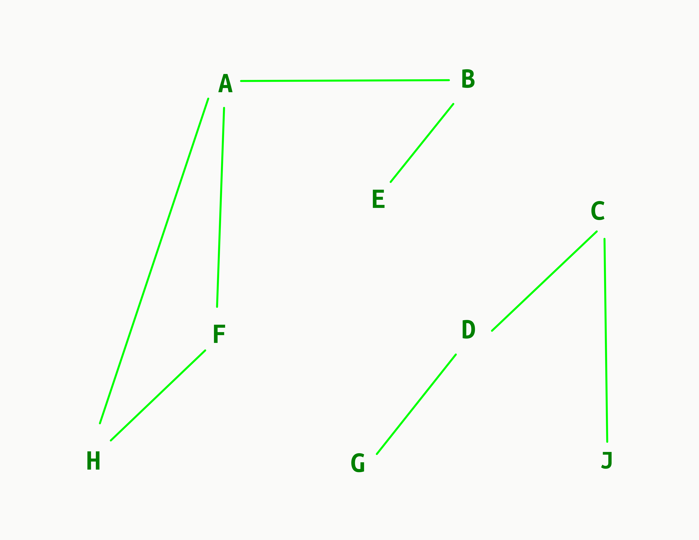
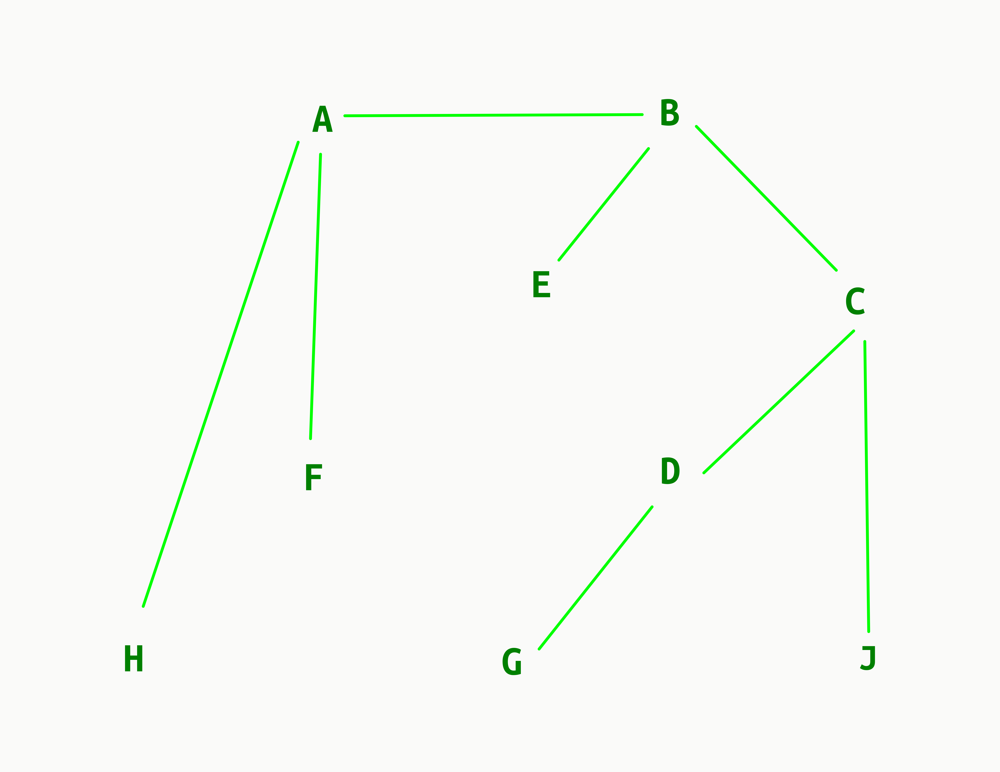
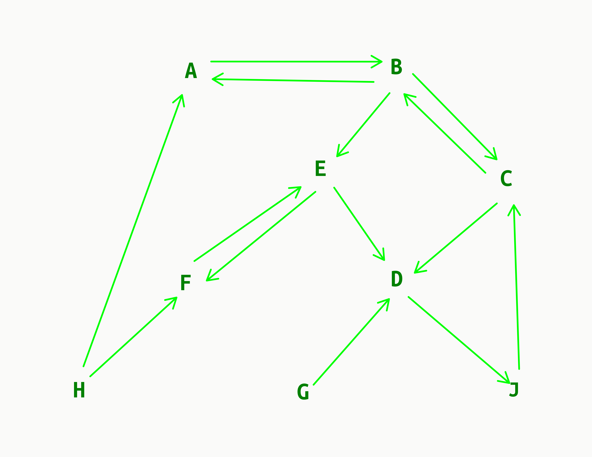
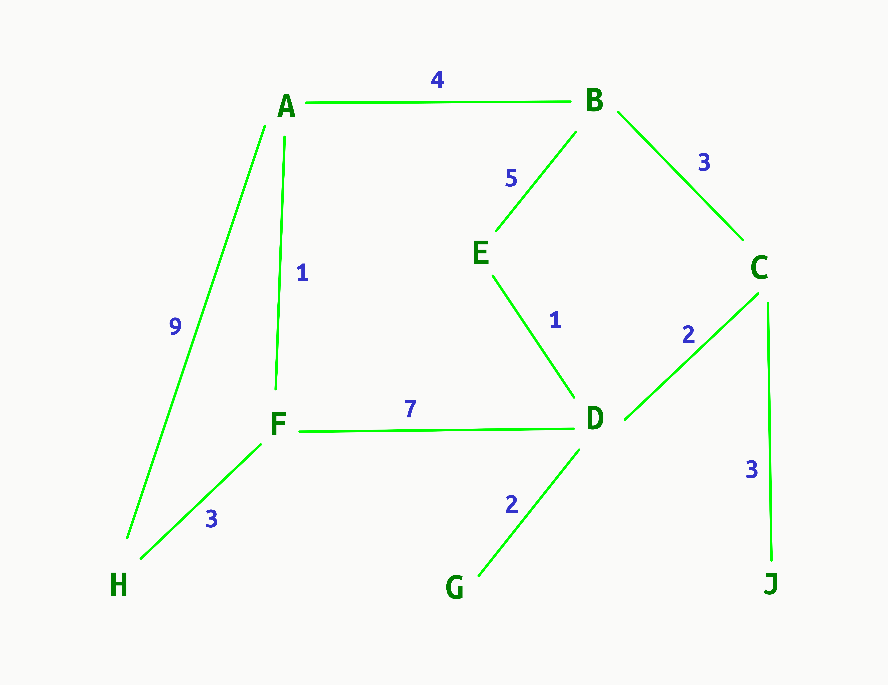
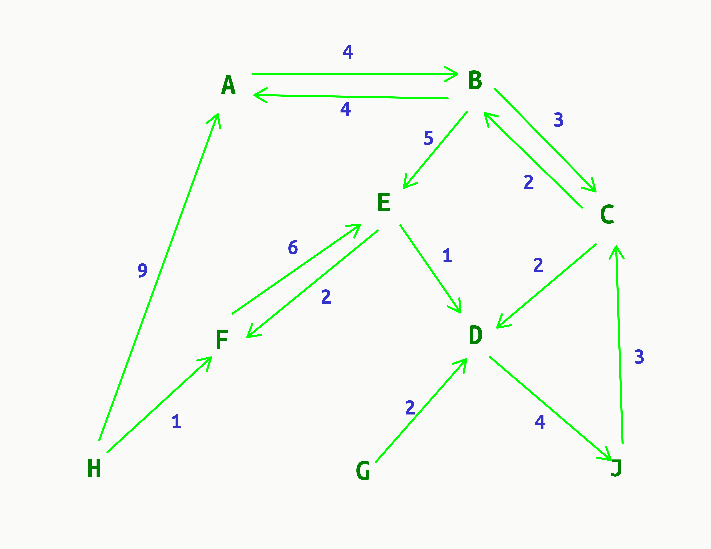

class: center, middle, title-slide # CSCI-UA 102 ## Data Structures <br> ## Graphs - Introduction .author[ Instructor: Joanna Klukowska <br><br><br> ] .license[ Copyright 2020 Joanna Klukowska. Unless noted otherwise all content is released under a <br> [Creative Commons Attribution-ShareAlike 4.0 International License](https://creativecommons.org/licenses/by-sa/4.0/).<br> Background image by Stewart Weiss<br>] --- layout:true template: default name: section class: inverse, middle, center --- layout:true template: default name: breakout class: breakout, middle --- layout:true template:default name:slide class: slide .bottom-left[© Joanna Klukowska. CC-BY-SA.] --- template: section # Graphs ## Terminology and Definitions --- ## Graphs: terminology and definitions .right-column2[.center[ <img width="400px" alt="undirected graph" src="img/15/graphs-1.png"> ]] - Graphs consist of - _nodes_ / _vertices_, <br/>the nodes on the right are: A, B, C, D, E, F, G, H, J - _edges_ , <br/> these are the connections between the edges; there are eleven edges on the right: A-B, A-F, A-H, B-C, B-E, C-D, C-J, D-G, D-F, E-D, F-H (they are listed in no particular order) -- - A _path in a graph_ leads from one node to another through the edges in the graph. In the graph on the right there are several paths from A to G. One of them is A-B-E-D-G. - The _length of a path_ is the number of edges in it. The path mentioned above has length 4. <br/> - A _cycle_ is a path in which the first and last nodes are the same. For example, A-B-E-D-F-A is a cycle. -- - Two nodes are _adjacent_ (or are _neighbors_) if there is an edge between them. --- ## Graphs: terminology and definitions .right-column2[.center[ <img width="350px" alt="undirected connected graph" src="img/15/graphs-1.png">  ]] - A graph is _connected_ if there exists a path between every pair of nodes, like the graph on the upper right. -- - A graph is _disconnected_ if it is NOT connected, like the graph on the lower right. - The parts of a disconnected graph are called its _connected components_. -- - A _tree_ is a connected graph with no cycles, like the graph below.  --- ## Graphs: terminology and definitions .right-column2[.center[  ]] - A _directed graph_ contains edges that can be traversed in one direction only. -- - there is an edge from H to A, but there is no edge from A to H -- - the path from B to D is B->E->D, but <br/> the path from D to B is D->J->C->B -- - If an edge exists in both directions, it is marked by two directed edges, like B->C and C->B --- ## Graphs: terminology and definitions .right-column2[.center[   ]] - A _weighted graph_ contains edges that have _weights_ assigned to them. - The graph on the upper right is an _undirected weighted graph_. - The graph on the lower right is a _directed weighted graph_. --- template: section # Graph Representations --- name:adj-list ## Adjacency List .right-column2[ ``` class Node { label/data list of nodes adjacent to it } ``` ] - Each node is assigned an _adjacency list_ of nodes that are adjacent to it. - The adjacency list can be stored as a linked list or an array. - The graph itself is represented as a list of nodes. --- template:adj-list .below-column2[] .right-column2[.center[ <img width="400px" alt="undirected graph" src="img/15/graphs-1.png"> ]] An adjacency list representation for the graph on the right could be a list as follows: ``` A, [B, F, H] B, [A, C, E] C, [D, J] D, [C, E, F, G] E, [B, D] F, [A, D, H] G, [D] H, [A, F] J, [C] ``` (each row represents a single node). -- Note that in an undirected graph, if a node is listed in the adjacency list of another node, then the symmetric case has to be true as well (since the adjacency relation is symmetric. For example, if E is adjacent to D, then D is adjacent to E. --- template:adj-list .below-column2[] .right-column2[.center[ ]] In a directed graph, there is no symmetry. An adjacency list representation for the graph on the right could be a list as follows: ``` A, [B] B, [A, C, E] C, [B, D] D, [J] E, [D, F] F, [E] G, [D] H, [A, F] J, [C] ``` (each row represents a single node). --- name:adjacency_matrix ## Adjacency Matrix - _Adjacency matrix_ is a matrix indicating the edges of the graph. - It is typically stored as a 2D array in which `matrix[a][b]` indicates if there is an edge between nodes `a` and `b` - for undirected graphs, `matrix[a][b]=matrix[b][a]` - for unweighted graphs, the matrix can store binary information - for weighted graphs, the matrix values indicate the weightz of the edge - drawback: uses $n^2$ elements and most of them may be zero (indicating no edges) --- template:adjacency_matrix .right-column2[.center[ <img width="400px" alt="directed graph" src="img/15/graphs-1.png"> ]] .left-column2[ Example for an undirected, unweighted graph | | A | B | C | D | E | F | G | H | J | |:---:|:---:|:---:|:---:|:---:|:---:|:---:|:---:|:---:|:---:| | **A** | 0 | **1** | 0 | 0 | 0 | **1** | 0 | **1** | 0 | | **B** | **1** | 0 | **1** | 1 | **1** | 0 | 0 | 0 | 0 | | **C** | 0 | **1** | 0 | **1** | 0 | 0 | 0 | 0 | **1** | | **D** | 0 | **1** | 1 | 0 | **1** | 1 | **1** | 0 | 0 | | **E** | 0 | **1** | 0 | **1** | 0 | 0 | 0 | 0 | 0 | | **F** | **1** | 0 | 0 | **1** | 0 | 0 | 0 | **1** | 0 | | **G** | 0 | 0 | 0 | **1** | 0 | 0 | 0 | 0 | 0 | | **H** | **1** | 0 | 0 | 0 | 0 | **1** | 0 | 0 | 0 | | **J** | 0 | 0 | **1** | 0 | 0 | 0 | 0 | 0 | 0 | ] --- name:edge_list ## Edge List - An _edge list_ is a list that contains all edges in the graph in some order. - It is convenient for use in algorithms that need to traverse all the edges and it is not necessary to find edges that start/end in a particular node. - Elements in an _edge list_ are pairs of nodes indicating the end-points for each edge. --- template:edge_list .right-column2[.center[ ]] .left-column2[ Example for a directed, unweighted graph. ``` A->B B->A B->C B->E C->B C->D D->J E->D E->F F->E G->D H->A H->F J->C ``` ] --- ## Implicit Graph - _Implicit graphs_ are graphs that are not stored using graphs data structures (like the ones in the previous slides). - They are used when the edge connectivity can be determined easily and/or if they can be determined using some rules. For example, - A graph contains N nodes labeled 0..N. There is an edge between two nodes if a sum of their labels is even. - A 2D grid represents a labirinth. The cells with passable corridors are marked with '.'. The cells with solid walls are marked with '#'. Each of those cells is an _implicit_ node in a graph. There is an _implicit_ edge between two nodes if the the two cells are connected along one of the four sides and they are both marked with a '.'. --- template: section # Graph Traversals --- ## Traversing a Graph Task: given a starting node in a graph, visit all nodes that can be reached from that node. -- - depth first search traversal (DFS) - breadth first search traversal (BFS) --- name:dfs ## Depth First Search Traversal .right-column2[ <img width="400px" alt="directed graph" src="img/15/graphs-1.png"> ] - follows a single path through the graph as long as there are un-visited nodes - after it cannot find any more nodes to visit, it _returns_ to previous nodes and follows unexplored paths from them - needs to keep track of visited nodes <p> --- template:dfs What order will the DFS traversal visit the nodes in the graph on the right when we start DFS at A? -- There are more than one possibilities. The exact order is determine by how the graph is stored and how we access the nodes adjacent to a given node. Here are some possible traversals: - A, F, H, D, G, E, B, C, J - A, B, E, D, F, H, G, C, J - A, B, C, J, D, E, F, H, G --- template:dfs <br/><br/> An algorithm using the adjacency list, `adj`, of a graph, O(n+m) .below-column2[ ``` visited[N] - boolean array with all values set initially to false dfs ( start ) if visited[start] return //already processed this node visited[start] = true //mark node as visited for n in adj[start] dfs( n ) ``` ] --- name:bfs ## Breadth First Search Traversal .right-column2[ <img width="400px" alt="directed graph" src="img/15/graphs-1.png"> ] - visits the nodes in order of their distance from a starting node (distance = path length between nodes) - visit all nodes whose distance from the start node is 1 - visit all nodes whose distance from the start node is 2 - ... <p> --- template:bfs What order will the BFS traversal visit the nodes in the graph on the right when we start BFS at A? -- Again, the exact ordering will depend on how we store the graph and how we access nodes adjacent to a given node. Here are possible traversals for the graph on the right. - A, B, F, H, C, E, D, G, J --- template:bfs An algorithm using the adjacency list of a graph, O(n+m) ``` visited[N] - boolean array with all values set initially to false queue - to store nodes to be visited bfs ( start ) visited [ start ] = true queue.push( start ) while queue is not empty node = queue.pop() for n in adj( node ) if ! visited[n] visited [n] = true queue.push( n ) ``` --- template:section # Examples and Things to Think About --- ## Graph Implementation Graphs serve many different purposes and their exact implementation needs to suit a specific purpose, so there are generally not among data structures implemented in programming language libraries. Implement a graph. Pick any implementation you want (or try it with all of them). Assume that the graph nodes have integer labels starting with 1 up to N. The graph is undirected and its description is given as a list of edges: <br/>`a b` indicates that there is an edge from `a` to `b`. -- How would your implementation be different for a directed graph? -- Modify your code so that it can handle weighted graphs. In this case the graph description would be given as a list of edges: <br/>`a b w` indicates that there is an edge from `a` to `b` with weight `w`. --- template: challenge ## Challenge Design algorithms for the following problems. - Given a pair of nodes, find the length of the shortest path from one to the other. Solve this for unweighted and weighted graphs. - Given a node, find the length of the shortest path from that node to all other nodes in the graph. Solve this for unweighted and weighted graphs. - Determine if a graph is connected or disconnected (algorithmically, not visually). If it is disconnected, figure out the number of nodes in each connected component. - Determine if a graph is a tree (algorithmically, not visually). --- ## Solving Problems Try to use your graph implementation to solve the following problems: - [Ab Initio](https://open.kattis.com/problems/abinitio) - the description is long, but it is a fairly easy problem if you have a graph implementation already - [Flying Safely](https://open.kattis.com/problems/flyingsafely) - [Cantina of Babel](https://open.kattis.com/problems/cantinaofbabel) - this is not a difficult problem, but you need to first figure out how to map it to a graph. --- </optgroup>